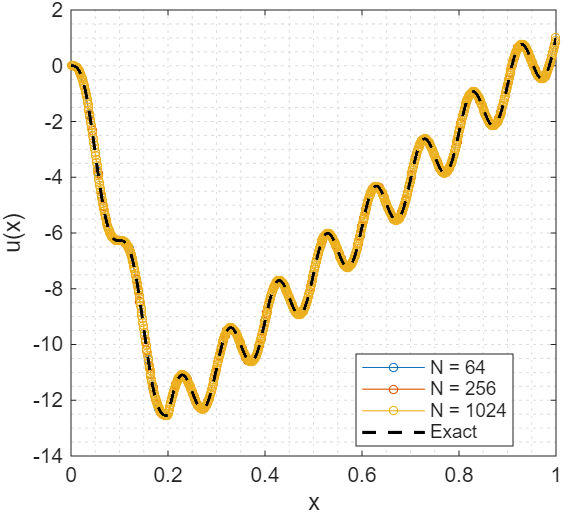
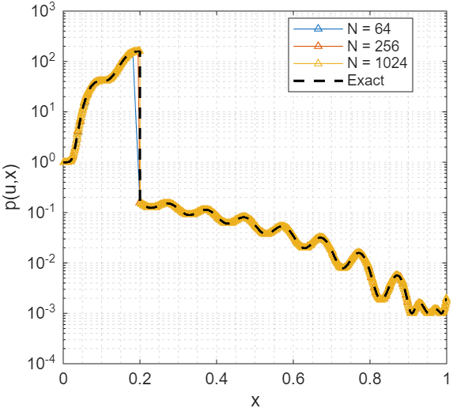
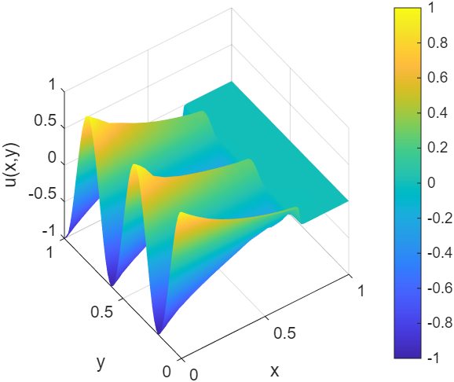

Paper_eng_5
A Preconditioning Procedure for Finite-Volume Jacobians of Steady Quasilinear Elliptic Problems with Discontinuous Diffusion
Kibeom Kim1, Young Jun Yoon2*
1Independent Researcher, Republic of Korea (kohmeutto@gmail.com)
2School of Electronic and Mechanical Engineering, Gyeongkuk National University, Andong, Republic of Korea (yjyoon@gknu.ac.kr)
*Correspondence: Young Jun Yoon
Keywords: Preconditioning; Quasilinear elliptic problem; Discrete Hodge decomposition; Inexact Newton method; Finite volume method
Abstract
Finite-volume discretization of a quasilinear elliptic problem with state-dependent diffusion induces non-normality in the Jacobian. The derivative of the diffusion coefficient with respect to the state variable is multiplied by the gradient of the state, and the resulting product acts as an effective drift that generates an advection-like skew-symmetric component. This asymmetry reduces the numerical stability of both direct and iterative linear solvers. The present work proposes a preconditioning procedure organized in three stages. The first stage diagnoses the source of asymmetry through the antisymmetric part operator, defined as the difference between a linear operator and its formal adjoint. The second stage employs a commutator-based local indicator to drive r-adaptive mesh relocation via a weighted graph Laplacian. The third stage introduces an edge-wise logarithmic ratio indicator that admits a closed-form equivalence with the sum of a geometric volume ratio and a one-dimensional line integral of the drift-to-diffusion ratio. A discrete Helmholtz–Hodge decomposition splits the indicator into an irrotational component, absorbed by a diagonal scaling, and a solenoidal component, identified with the skew-symmetric component of the rescaled Jacobian and subtracted from the Jacobian within an inexact Newton method. A field-of-values argument bounds the spectrum of the preconditioned operator within a complex disk centered at unity. Numerical verification by the method of manufactured solutions on one- and two-dimensional problems with discontinuous diffusion confirms the absorption of non-normality and the spectral clustering predicted by the field-of-values bound.
1. Introduction
Quasilinear elliptic problems with state-dependent diffusion arise in heat conduction, porous media flow, and semiconductor device modeling. In many such problems, the diffusion coefficient also exhibits discontinuities across material interfaces. The finite volume method (FVM) is a natural discretization for these problems because it preserves local conservation [1, 2]. However, the algebraic Jacobian produced by FVM inherits a structural asymmetry. This asymmetry originates not from the elliptic principal part, but from the linearization of the nonlinear coefficient. Differentiating the flux with respect to the state variable produces a term in which the derivative of the diffusion coefficient is multiplied by the gradient of the state. This product acts on the discrete operator as an effective drift. The Jacobian decomposes into three parts: a self-adjoint diffusive part, a skew-symmetric advective part associated with the effective drift, and a zeroth-order reaction part. The skew-symmetric advective part is the algebraic origin of non-normality. A non-normal operator possesses a non-orthogonal eigenvector basis. With stable eigenvalues, perturbations may exhibit transient growth before asymptotic decay. The behavior of linear solvers depends on the field of values in addition to the spectrum [3, 4, 5]. In iterative methods such as GMRES, the convergence rate decreases as the field of values enlarges [6, 7, 8]. In direct methods such as sparse LU factorization, the non-orthogonal eigenvector basis amplifies pivot growth and reduces the stability of the factorization. These characteristics appear as the condition-number growth under mesh refinement, the slowing of Krylov convergence, and the loss of robustness in Newton iterations near material discontinuities. A common remedy is to add empirical relaxation factors or numerical viscosity. This restores robustness but alters the discrete equation, since the heuristic removal of physically inherent advective terms modifies the converged solution. The present work investigates an alternative approach that diagnoses and rebalances the discrete operator by purely algebraic means. By doing so, the original equation is preserved, and the conditioning of the linear system is improved.
The present work treats the FVM Jacobian as an object whose asymmetry can be identified, locally measured, and globally rebalanced. The proposed procedure consists of three stages. The first stage is diagnosis. A Fréchet expansion of the Jacobian about the current state separates the self-adjoint diffusive part, the skew-symmetric advective part, and the reaction part. The diagnosis of non-normality through this structural decomposition is grounded in the Hermitian and skew-Hermitian splitting (HSS) family, which uses the structural decomposition of an operator into self-adjoint and skew-symmetric parts as the basis of preconditioning [9]. Pseudospectra and field-of-values analyses characterize the transient growth and the Krylov convergence behavior of these non-normal operators [3, 4]. The second stage is local correction. A commutator-based local indicator drives r-adaptive mesh relocation. The indicator is obtained from the antisymmetric part operator of the convection at each node, and is subsequently used as the edge weight of a graph Laplacian system whose solution determines the new node coordinates. The construction of the local indicator is presented in Section 3, and the mesh-adaptation step employs standard r-adaptive techniques [10, 11, 12, 13, 14, 15]. The third stage is global correction. An edge-wise logarithmic ratio indicator is defined from the magnitudes of cross-diagonal Jacobian entries and the local control-volume measures. The first analytical result is a closed-form equivalence: on each edge, the indicator reduces to the sum of a geometric volume ratio and a one-dimensional line integral of the drift-to-diffusion ratio. This equivalence connects two distinct lines of work. One is the diagonal equilibration of nonsymmetric matrices [16, 17]. The other is the exponential fitting of edge fluxes originating with Scharfetter and Gummel [18], where the natural edge weight for an advection-diffusion problem involves the exponential of that one-dimensional line integral. The second analytical result applies a discrete Helmholtz–Hodge decomposition (DHHD) to the indicator field [19, 20, 21, 22, 23]. The decomposition splits the indicator field into an irrotational component, which is absorbed by a diagonal scaling matrix, and a solenoidal component. The solenoidal component is identified with the skew-symmetric component of the rescaled Jacobian, subtracted from the Jacobian on the left-hand side, and retained inside the nonlinear residual on the right-hand side.
The result is an inexact Newton iteration whose preconditioned operator admits a field-of-values bound, with its spectrum contained in a complex disk centered at unity. The diagonal scaling absorbs the irrotational component of the cross-diagonal magnitude imbalance, and the field-of-values bound provides the analytical guarantee. The condition number of the rescaled Jacobian is reported as an auxiliary diagnostic. The use of an approximate Jacobian within Newton iteration, while preserving the exact nonlinear residual on the right-hand side, conforms to the inexact Newton method and to the Newton–Krylov family of solvers [24, 25, 26, 27, 28, 29]. Through numerical verification by the method of manufactured solutions (MMS) on one- and two-dimensional quasilinear elliptic problems with discontinuous diffusion, the absorption of non-normality and the spectral clustering of the preconditioned operator are confirmed [30, 31]. The paper is organized as follows. Section 2 formulates the quasilinear elliptic problem and analyzes the continuum linearization. Section 3 presents the FVM discretization and the local commutator-based indicator that drives r-adaptive mesh relocation. Section 4 develops the edge-wise logarithmic ratio indicator, proves its closed-form equivalence, and applies the DHHD to the indicator field. Section 5 constructs the preconditioning matrix, establishes the consistency of the inexact Newton iteration, and derives the field-of-values bound. Section 6 reports numerical verification on one- and two-dimensional MMS problems. Section 7 summarizes the work and discusses limitations and directions for future research.
2. Quasilinear elliptic problem and continuous linearization
2.1. Governing equation and boundary conditions
Let $\Omega \subset \mathbb{R}^d$ denote a bounded domain with Lipschitz boundary $\partial\Omega$. Consider the quasilinear elliptic equation:
$$ \nabla \cdot \bigl( p(u, \mathbf{x}) \nabla u \bigr) = q(u, \mathbf{x}) \quad \text{in } \Omega, \tag{1} $$where $u$ is the unknown state variable, $p(u, \mathbf{x})$ is a state-dependent diffusion coefficient that may be discontinuous in $\mathbf{x}$ across material interfaces, and $q(u, \mathbf{x})$ is a state-dependent source term. To ensure the well-posedness of the linearized system and to reflect the negative feedback characteristics of stable physical systems, the inequality $\partial q/\partial u \ge 0$ is assumed throughout the domain. Under this sign convention, the symmetric part of the linearized operator introduced in Section 2.2 is negative definite on the interior. The boundary $\partial\Omega$ is partitioned into a Dirichlet part $\partial\Omega_D$ and a Robin part $\partial\Omega_R$ with prescribed scalars $\alpha$, $\beta$, $\gamma$ and outward unit normal $\mathbf{n}$,
$$ u = u_D \quad \text{on } \partial\Omega_D, \tag{2a} $$$$ \alpha u + \beta\, p(u, \mathbf{x}) \nabla u \cdot \mathbf{n} = \gamma \quad \text{on } \partial\Omega_R. \tag{2b} $$The Robin condition affects diagonal dominance and introduces skew-symmetric contributions during the assembly of the algebraic Jacobian in Section 3. The diffusion coefficient is bounded and strictly positive on each subdomain separated by material interfaces. Across an interface, the standard transmission condition applies: $u$ is continuous, and the normal component of the flux $p \nabla u \cdot \mathbf{n}$ is continuous. The state variable resides in the Sobolev space $H^1(\Omega)$ of square-integrable functions with square-integrable weak derivatives, while its gradient may exhibit a jump discontinuity at the interface.
2.2. Linearization and Fréchet decomposition
The linearization of (1) about the current state $u$ produces a Fréchet derivative $J : H^1_0(\Omega) \to H^{-1}(\Omega)$ acting on a perturbation $\delta u \in H^1_0(\Omega)$. Differentiating the residual $\nabla \cdot (p \nabla u) - q$ and grouping terms by the order of the derivative on $\delta u$ yields
$$ J\, \delta u = L_2\, \delta u + L_1\, \delta u + L_0\, \delta u, \tag{3a} $$with the three components
$$ L_2\, \delta u = \nabla \cdot \bigl( p(u, \mathbf{x})\, \nabla \delta u \bigr), \tag{3b} $$$$ L_1\, \delta u = \nabla \cdot \bigl( \mathbf{v}\, \delta u \bigr), \quad \mathbf{v} = \frac{\partial p}{\partial u}\, \nabla u, \tag{3c} $$$$ L_0\, \delta u = -\frac{\partial q}{\partial u}\, \delta u. \tag{3d} $$The principal diffusive operator $L_2$ inherits the elliptic principal part of (1). The advection-like operator $L_1$ originates exclusively from the linearization of $p(u, \mathbf{x})$ with respect to $u$, and the product $(\partial p/\partial u)\nabla u$ acts as an effective drift $\mathbf{v}$ on $\delta u$. The reaction operator $L_0$ is multiplication by the real-valued function $-\partial q/\partial u$, which under the sign convention of Section 2.1 is non-positive throughout $\Omega$. The decomposition (3) is exact at the continuum level and isolates the source of any non-self-adjointness of $J$ in $L_1$, since $L_2$ and $L_0$ are self-adjoint on $H^1_0(\Omega)$ with respect to the standard inner product.
2.3. Antisymmetric part operator
For any linear operator $L$ acting on a complex Hilbert space $\mathcal{H}$ with inner product $\langle \phi, \psi \rangle = \int_\Omega \phi^*\psi\, d\Omega$, the antisymmetric part operator is defined as
$$ \mathcal{R}(L) = L - L^\dagger, \tag{4} $$where $L^\dagger$ denotes the formal adjoint of $L$. The map $\mathcal{R}$ is additive in $L$. On compactly supported test functions, $\mathcal{R}(L_2) = 0$ since $L_2$ is self-adjoint in the interior, and $\mathcal{R}(L_0) = 0$ since $L_0$ is multiplication by a real-valued function. The non-trivial contribution originates entirely from $\mathcal{R}(L_1)$. The formal adjoint of $L_1$ is $L_1^\dagger = -\mathbf{v}\cdot\nabla$ by integration by parts. Combined with the Leibniz expansion of $L_1\psi$, this yields
$$ \mathcal{R}(L_1)\,\psi = (\nabla\cdot\mathbf{v})\,\psi + 2\,\mathbf{v}\cdot\nabla\psi. \tag{5} $$The right-hand side comprises the divergence of the effective drift acting on $\psi$ and twice the homogeneous advection of $\psi$ along $\mathbf{v}$.
3. Finite-volume discretization and local indicator
The domain $\Omega$ is partitioned into non-overlapping control volumes $\{\Omega_i\}_{i=1}^{N}$ such that $\overline{\Omega} = \bigcup_i \overline{\Omega_i}$. Each $\Omega_i$ carries a single nodal degree of freedom $u_i$, and two control volumes that share a common boundary form an edge of the mesh graph. In one dimension the mesh graph is a chain with no closed loops, while in two dimensions it contains closed loops, a distinction exploited in Sections 5 and 6. The discrete divergence operator $\hat{D}$ on the mesh graph acts on a nodal field $\boldsymbol{\phi}$ at node $k$ as $[\hat{D}\boldsymbol{\phi}]_k = \sum_j \hat{D}_{kj}\phi_j$, with the zero-sum property $\sum_j \hat{D}_{kj} = 0$, the discrete counterpart of the divergence theorem applied to a constant field [32, 33, 34]. $\hat{D}$ is the discrete realization of $\nabla\cdot$ on $\Omega$.
3.1. Discrete projection of the convective residue
The local indicator is constructed from the discrete realization of the two terms on the right-hand side of (5), assembled at each node of the FVM mesh. For any nodal field $\psi$ and any nodal velocity field $v$, the total discrete divergence at node $k$ of the product $v\psi$, in terms of $\hat{D}$, is
$$ [\hat{D}(v\psi)]_k = \sum_{j} \hat{D}_{kj}\, v_j\, \psi_j. \tag{6} $$Subtracting the identically zero term $v_k\psi_k \sum_j \hat{D}_{kj}$ recasts the right-hand side in relative form:
$$ [\hat{D}(v\psi)]_k = \sum_{j} \hat{D}_{kj}\, ( v_j\psi_j - v_k\psi_k ). \tag{7} $$The factor inside the parenthesis is split as $v_j\psi_j - v_k\psi_k = (v_j - v_k)\,\psi_j + v_k\,(\psi_j - \psi_k)$, so the discrete divergence at node $k$ separates into two contributions:
$$ [\hat{D}(v\psi)]_k = \sum_{j} (v_j - v_k)\, \hat{D}_{kj}\, \psi_j + \sum_{j} v_k\, \hat{D}_{kj}\, (\psi_j - \psi_k). \tag{8} $$By the zero-sum property, the second sum reduces to $\sum_j v_k \hat{D}_{kj}\psi_j$, which represents the standard discrete realization of the homogeneous advection $\mathbf{v}\cdot\nabla\psi$ at node $k$. The first sum is already in the form $\sum_j (v_j - v_k)\hat{D}_{kj}\psi_j$, representing the discrete realization of the divergence of the drift acting on $\psi$. Including the second sum with a factor of two, consistent with (5), yields the total discrete convective residue at node $k$:
$$ \bigl[(\nabla\cdot\mathbf{v})\,\psi + 2\,\mathbf{v}\cdot\nabla\psi\bigr]_k = \sum_{j} T_{kj}. \tag{9a} $$$$ T_{kj} = ( v_j + v_k )\, \hat{D}_{kj}\, \psi_j, \tag{9b} $$which represents the local directional tension transferred along the edge from node $k$ to node $j$. $T_{kj}$ inherits a sign from the orientation of the edge. To obtain a non-negative scalar invariant under reversal, the local indicator on the edge $(k, j)$ is defined as
$$ S_{kj} = \tfrac{1}{2}\bigl( |T_{kj}| + |T_{jk}| \bigr). \tag{10} $$$S_{kj}$ measures the local imbalance of the convective residue across the edge. It attains large values where the effective drift varies significantly between adjacent nodes or where the state perturbation exhibits a sharp gradient. It is identically zero when the advection-like contribution is absent ($\partial p/\partial u = 0$).
3.2. Weighted graph Laplacian and r-adaptive relocation
$S_{kj}$ is incorporated into a weighted graph Laplacian system to determine the new node coordinates [13, 14, 35, 36]. A dimensionless indicator is obtained by normalizing $S_{kj}$ with its global maximum:
$$ \bar{S}_{kj} = \frac{S_{kj}}{\max_{(m,n)} S_{mn}}, \tag{11a} $$$$ W_{kj} = 1 + \bar{S}_{kj}. \tag{11b} $$The unit baseline ensures the positive definiteness of the Laplacian system and bounds the local stiffness from below. This bounded stiffness limits the magnitude of local deformation, preventing the topological inversion of cells during relocation. Treating the mesh as a network of springs with stiffness $W_{kj}$, the equilibrium position $X_i$ of an interior node $i$ is determined by a zero net spring force:
$$ \sum_{j \in \mathcal{N}(i)} W_{ij} ( X_i - X_j ) = 0, \tag{12} $$where $\mathcal{N}(i)$ denotes the set of neighbors of node $i$. The diagonal sum $\sum_{j} W_{ij}$ defines the entry $K_{ii}$ of the degree matrix $\hat{K}$. Letting $\hat{W}$ denote the global adjacency matrix assembled from the edge weights, the local equilibrium conditions assemble into the global pure graph Laplacian:
$$ \hat{L}_{\mathrm{sys}} = \hat{K} - \hat{W}. \tag{13} $$$\hat{L}_{\mathrm{sys}}$ is singular, possessing a one-dimensional null space corresponding to rigid translation. To enforce a unique solution, Dirichlet boundary conditions are applied by clamping the boundary nodes to a reference coordinate vector $\mathbf{B}_{\mathrm{ref}}$. The clamped operator $\tilde{L}_{\mathrm{sys}}$ is invertible, and the new interior coordinates are obtained from
$$ \tilde{L}_{\mathrm{sys}} \mathbf{X}_{\mathrm{new}} = \mathbf{B}_{\mathrm{ref}}. \tag{14} $$Because $\bar{S}_{kj}$ is bounded above by unity, each edge weight resides in $[1.0, 2.0]$. This bound, combined with the diagonal dominance induced by $\hat{K}$, ensures that relocation does not invert cells in either one or two dimensions. Following relocation, each control volume measure $\tilde{V}_k$ is recomputed in the new coordinate system, producing the dual volume metric matrix:
$$ \hat{G} = \mathrm{diag}( \tilde{V}_0,\, \tilde{V}_1,\, \ldots,\, \tilde{V}_{N-1} ). \tag{15} $$$\hat{G}$ encodes the geometric scaling of the relocated mesh.
4. Edge log-ratio indicator and Helmholtz–Hodge decomposition
4.1. Edge log-ratio indicator
Section 3 provides the relocated mesh and $\hat{G}$. The FVM Jacobian $\hat{J}$ is the discrete realization of $J$ in (3) on this mesh. To algebraically rebalance the cross-diagonal magnitudes of $\hat{J}$, a diagonal scaling matrix is introduced as
$$ \hat{C} = \mathrm{diag}(e^{z_1}, \ldots, e^{z_N}), \qquad z_i \in \mathbb{R}, \tag{16} $$with the exponential parametrization enforcing strict positivity of every diagonal entry. The rescaled Jacobian is then defined as
$$ \tilde{J} = \hat{C}\hat{G}\hat{J}. \tag{17} $$The nodal potential $\mathbf{Z} = (z_1, \ldots, z_N)^T \in \mathbb{R}^N$ is chosen so that $\tilde{J}$ approximately satisfies the cross-diagonal magnitude balance $|\tilde{J}_{ij}| = |\tilde{J}_{ji}|$ for all adjacent pairs $(i, j)$. Expanding $\tilde{J}_{ij}$ in components yields the local equality $e^{z_i} |(\hat{G}\hat{J})_{ij}| = e^{z_j} |(\hat{G}\hat{J})_{ji}|$, and taking the natural logarithm of both sides produces the additive form
$$ z_i - z_j = \ln \!\left( \frac{|(\hat{G}\hat{J})_{ji}|}{|(\hat{G}\hat{J})_{ij}|} \right) = b_{ij}. \tag{18} $$The right-hand side defines the edge log-ratio indicator $b_{ij}$ on the mesh graph. The left-hand side $z_i - z_j$ is the discrete differential of $\mathbf{Z}$ associated with the edge between nodes $i$ and $j$, with the sign convention fixed by the magnitude balance condition. The value $b_{ij}$ is measured directly from the entries of $\hat{G}\hat{J}$. Collecting the equations across all edges yields the overdetermined linear system
$$ \hat{S}\,\mathbf{Z} = \mathbf{b}, \tag{19} $$where $\hat{S}$ is the edge–node incidence matrix of the mesh graph, with entries in $\{-1, 0, 1\}$ depending on the edge orientation. The matrix $\hat{S}$ acts as a discrete gradient mapping nodal potentials to edge values, while its transpose $\hat{S}^T$ acts as a discrete divergence mapping edge values back to nodes. The system $\hat{S}\mathbf{Z} = \mathbf{b}$ is generally inconsistent because $\mathbf{b}$ may carry a non-trivial circulation around closed loops of the mesh graph. This inconsistency motivates the DHHD developed below.
4.2. Closed-form equivalence
$b_{ij}$ admits a closed-form expression in terms of two physically interpretable quantities. The first is the geometric ratio of the adjacent control volumes recovered from $\hat{G}$ of Section 3. The second is a one-dimensional line integral of the drift-to-diffusion ratio along the edge.
The derivation introduces an edge-level model in which the linearized flux $-p\nabla\psi + \mathbf{v}\psi$ satisfies a one-dimensional flux conservation law along each edge with $p$ and $\mathbf{v}$ frozen at the current state, following the exponential-fitting construction of Scharfetter and Gummel [18]. Under this model, the directional flux from node $i$ to node $j$ is
$$ \Gamma_{i \to j} = \Sigma_{ij}\!\left( -p(\xi)\frac{d\psi}{d\xi} + v(\xi)\, \psi \right), \tag{20} $$where $\xi$ is the one-dimensional arc-length coordinate along the edge, $v(\xi) = \mathbf{v}\cdot\mathbf{e}_{ij}$ is the directional projection of $\mathbf{v}$ onto the unit edge vector $\mathbf{e}_{ij}$, and $\Sigma_{ij}$ is the cross-sectional area at the edge. The quantity inside the parenthesis is the one-dimensional flux density. Because no source is taken to act inside the edge, this flux density remains constant with respect to $\xi$. Solving the resulting first-order linear ordinary differential equation for $\psi(\xi)$ along the edge with boundary values $\psi(\xi_i) = \psi_i$ and $\psi(\xi_j) = \psi_j$ yields
$$ \Gamma_{i\to j} = \frac{\Sigma_{ij}}{R_{ij}}\, \psi_i - \frac{\Sigma_{ij}}{R_{ij}} \exp\!\left( -\int_{\xi_i}^{\xi_j} \frac{v(s)}{p(s)}\, ds \right) \psi_j, \tag{21} $$with the effective edge resistance
$$ R_{ij} = \int_{\xi_i}^{\xi_j} \frac{1}{p(\xi)} \exp\!\left( -\int_{\xi_i}^{\xi} \frac{v(s)}{p(s)}\, ds \right) d\xi. \tag{22} $$The discrete cross-flux conservation $\Gamma_{j\to i} = -\Gamma_{i\to j}$ holds at the interface by construction. Differentiating the discrete residual with respect to the perturbation variables produces the cross-diagonal entries of the primitive Jacobian:
$$ \hat{J}_{ij} = -\frac{\Sigma_{ij}}{R_{ij}} \exp\!\left( -\int_{\xi_i}^{\xi_j} \frac{v(s)}{p(s)}\, ds \right), \tag{23a} $$$$ \hat{J}_{ji} = -\frac{\Sigma_{ij}}{R_{ij}}. \tag{23b} $$Substituting these expressions into the definition of $b_{ij}$ in (18) and applying the diagonal entries $\tilde{V}_i, \tilde{V}_j$ of $\hat{G}$ gives the closed form
$$ b_{ij} = \ln\!\left(\frac{\tilde{V}_j}{\tilde{V}_i}\right) + \int_{\xi_i}^{\xi_j} \frac{v(s)}{p(s)}\, ds = \ln\!\left(\frac{\tilde{V}_j}{\tilde{V}_i}\right) + \int_i^j \frac{\mathbf{v}}{p} \cdot d\boldsymbol{\ell}, \tag{24} $$where the cross-sectional area $\Sigma_{ij}$ and the effective resistance $R_{ij}$ cancel due to the symmetry $\Sigma_{ij} = \Sigma_{ji}$ and the anti-symmetry of the discrete flux. Recasting the line integral in vector form along the straight edge from node $i$ to node $j$ produces the equivalent expression with $\mathbf{v}$.
The closed form (24) separates two sources of cross-diagonal asymmetry. The first term $\ln(\tilde{V}_j/\tilde{V}_i)$ vanishes only when neighboring control volumes share the same measure, and depends solely on the relocated mesh of Section 3. The second term $\int_i^j \mathbf{v}/p \cdot d\boldsymbol{\ell}$ has $\mathbf{v} = (\partial p/\partial u)\nabla u$ as its integrand, which is the same field that drives $\mathcal{R}(L_1)$ in (5). The local indicator $S_{kj}$ of Section 3 discretizes $\mathcal{R}(L_1)$ at each node to drive r-adaptive relocation; the second term of $b_{ij}$ integrates the same $\mathcal{R}(L_1)$ along each edge to feed the diagonal scaling $\hat{C}$. The two indicators address the same asymmetry at two scales. When $\partial p/\partial u = 0$, the second term vanishes identically, $b_{ij}$ reduces to $\ln(\tilde{V}_j/\tilde{V}_i)$, and $\hat{C}$ coincides with the standard volume normalization.
4.3. DHHD of the indicator field
$\mathbf{b}$ from Section 4.1 lies on the edge space of the mesh graph. The composition $\hat{S}^T \hat{S}$ represents the unweighted graph Laplacian, determined entirely by the mesh topology. The least-squares solution of the overdetermined system $\hat{S}\mathbf{Z} = \mathbf{b}$ is the unique nodal potential $\mathbf{Z}_{\mathrm{LS}}$ that minimizes the Euclidean residual:
$$ (\hat{S}^T \hat{S})\, \mathbf{Z}_{\mathrm{LS}} = \hat{S}^T\mathbf{b}. \tag{25} $$A reference value is fixed at one Dirichlet node to remove the constant null space of $\hat{S}^T \hat{S}$. This least-squares solution defines the orthogonal decomposition
$$ \mathbf{b} = \hat{S}\,\mathbf{Z}_{\mathrm{LS}} + \mathbf{r}, \tag{26a} $$$$ \hat{S}^T \mathbf{r} = \mathbf{0}. \tag{26b} $$in which $\hat{S}\mathbf{Z}_{\mathrm{LS}}$ is the irrotational component lying in the irrotational subspace $\mathrm{Im}(\hat{S})$, and $\mathbf{r}$ is the solenoidal residue lying in the orthogonal complement $\ker(\hat{S}^T)$. The two components are orthogonal in the Euclidean inner product on the edge space, so the Pythagorean identity $\|\mathbf{b}\|_2^2 = \|\hat{S}\mathbf{Z}_{\mathrm{LS}}\|_2^2 + \|\mathbf{r}\|_2^2$ holds, and the dimensionless cancellation ratio is defined as
$$ \eta = \frac{\|\hat{S}\mathbf{Z}_{\mathrm{LS}}\|_2^2}{\|\mathbf{b}\|_2^2} = 1 - \frac{\|\mathbf{r}\|_2^2}{\|\mathbf{b}\|_2^2}. \tag{27} $$The ratio $\eta$ measures the fraction of the cross-diagonal magnitude imbalance representable as the gradient of a nodal scalar field. Its complement $1 - \eta$ measures the fraction that is inherently rotational and cannot be removed by diagonal scaling.
5. Preconditioning and inexact Newton method
5.1. Two-stage splitting and preconditioning matrix
The DHHD (26a)–(26b) decomposes $\mathbf{b}$ orthogonally as $\hat{S}\mathbf{Z}_{\mathrm{LS}} + \mathbf{r}$, and the two components are processed at distinct stages. From the parametrization (16), the contribution of $\hat{C}$ to $\mathbf{b}$ takes the form $\hat{S}\mathbf{Z}$ for some $\mathbf{Z}$ and is therefore confined to $\mathrm{Im}(\hat{S})$, so no element of the orthogonal complement $\ker(\hat{S}^T)$ is reachable by any $\hat{C}$. Setting $\mathbf{Z} = \mathbf{Z}_{\mathrm{LS}}$ absorbs the irrotational projection $\hat{S}\mathbf{Z}_{\mathrm{LS}}$ into $\hat{C}$, while the residue $\mathbf{r} \in \ker(\hat{S}^T)$ carries circulation around closed loops of the mesh graph and remains unreachable by any rescaling. This construction generalizes diagonal equilibration [16, 17].
The residue $\mathbf{r}$ must therefore be removed by an explicit subtraction step from the rescaled Jacobian $\tilde{J} = \hat{C}\hat{G}\hat{J}$. The skew-symmetric part $\tilde{A} = (\tilde{J} - \tilde{J}^T)/2$ contains the entire residual asymmetry of $\tilde{J}$ in algebraic form and is the target of the subtraction.
The subtraction must distinguish between interior and boundary rows. The boundary rows of $\tilde{J}$ encode the discretized Robin condition (2b), in which $\partial\Omega_R$ contributes non-symmetric entries through the surface terms of integration by parts and the cross-coupling between $u$ and $\mathbf{n}\cdot\nabla u$. Subtracting these entries would alter the boundary conditions themselves and compromise the well-posedness of the linear system at each Newton step. The subtraction is therefore restricted to the interior block of $\tilde{A}$. To separate the interior contribution from the boundary contribution, the diagonal projection matrix $\hat{M}_s$ is introduced, with zero entries at boundary node indices and one entries at interior node indices. The interior-restricted skew-symmetric residue is
$$ \tilde{A}_{\mathrm{int}} = \hat{M}_s\, \tilde{A}\, \hat{M}_s, \tag{28} $$while the boundary-induced asymmetry $\tilde{A}_{\mathrm{bnd}} = \tilde{A} - \tilde{A}_{\mathrm{int}}$ remains intact. The preconditioning matrix is then defined as
$$ \tilde{J}_{\mathrm{pure}} = \tilde{J} - \tilde{A}_{\mathrm{int}}, \tag{29} $$which is symmetric on the interior block and retains the original boundary entries of $\tilde{J}$. This matrix serves as the search operator in the inexact Newton iteration of Section 5.2.
5.2. Inexact Newton consistency
Construction of $\tilde{J}_{\mathrm{pure}}$ involves a structural modification of the Jacobian. The right-hand side of the iteration must be consistent with this modification so that the converged state solves the original nonlinear equation $\mathbf{F}(\mathbf{u}) = \mathbf{0}$. The transformed residual vector is
$$ \tilde{\mathbf{F}}(\mathbf{u}) = \hat{C}\hat{G}\,\mathbf{F}(\mathbf{u}). \tag{30} $$The Taylor expansion of $\tilde{\mathbf{F}}$ around $\mathbf{u}$ contains derivative terms involving $\partial\hat{C}/\partial\mathbf{u}$ and $\partial\hat{G}/\partial\mathbf{u}$ that act on $\mathbf{F}(\mathbf{u})$ and vanish asymptotically as $\mathbf{F}(\mathbf{u}) \to \mathbf{0}$. The effective Jacobian of $\tilde{\mathbf{F}}$ in the convergence regime is therefore $\tilde{J} = \hat{C}\hat{G}\hat{J}$, and the linearized iteration step is defined by
$$ \tilde{J}_{\mathrm{pure}}\, \delta\mathbf{u} = -\,\tilde{\mathbf{F}}(\mathbf{u}). \tag{31} $$The skew-symmetric residue $\tilde{A}_{\mathrm{int}}$ is subtracted from the left-hand-side search matrix but evaluated within $\tilde{\mathbf{F}}$ on the right-hand side. This structural discrepancy characterizes the inexact Newton method [24, 25]. When the iteration converges, $\delta\mathbf{u} \to \mathbf{0}$ and $\tilde{\mathbf{F}}(\mathbf{u}_\infty) = \mathbf{0}$. Because $\hat{C}$ and $\hat{G}$ are non-singular diagonal matrices, this implies
$$ \hat{C}\hat{G}\,\mathbf{F}(\mathbf{u}_\infty) = \mathbf{0} \quad \Longleftrightarrow \quad \mathbf{F}(\mathbf{u}_\infty) = \mathbf{0}. \tag{32} $$The structural modification of the left-hand-side Jacobian affects the search direction but not the fixed point of the iteration. The skew-symmetric residue $\tilde{A}_{\mathrm{int}}$ is rebalanced in the linear solver and preserved in the nonlinear residual, so the procedure retains the physically inherent advection-like component of the governing equation.
5.3. Field-of-values bound
A field-of-values bound on the spectrum of $\tilde{J}_{\mathrm{pure}}^{-1}\tilde{J}$ confines the eigenvalues to a complex disk centered at unity, with radius determined by the relative magnitude of $\tilde{A}_{\mathrm{int}}$ with respect to the symmetric part. The argument relies on the identity $\tilde{J} = \tilde{J}_{\mathrm{pure}} + \tilde{A}_{\mathrm{int}}$, which follows directly from (29). Substituting this identity into the generalized eigenvalue equation $\tilde{J}\mathbf{w} = \lambda \tilde{J}_{\mathrm{pure}}\mathbf{w}$ with $\lambda \in \mathbb{C}$ and $\mathbf{w} \in \mathbb{C}^N$, and rearranging gives
$$ \tilde{A}_{\mathrm{int}}\mathbf{w} = (\lambda - 1)\,\tilde{J}_{\mathrm{pure}}\mathbf{w}. \tag{33} $$Pre-multiplying by the conjugate transpose $\mathbf{w}^*$ produces a quadratic form. Decomposing $\tilde{J}_{\mathrm{pure}} = \tilde{H} + \tilde{A}_{\mathrm{bnd}}$ and substituting yields
$$ \mathbf{w}^* \tilde{A}_{\mathrm{int}}\mathbf{w} = (\lambda - 1)\,(\mathbf{w}^*\tilde{H}\mathbf{w} + \mathbf{w}^*\tilde{A}_{\mathrm{bnd}}\mathbf{w}). \tag{34} $$Under the normalization $\|\mathbf{w}\| = 1$, the symmetric quadratic form $\mathbf{w}^*\tilde{H}\mathbf{w}$ is real and the skew-symmetric quadratic forms $\mathbf{w}^*\tilde{A}_{\mathrm{int}}\mathbf{w}$ and $\mathbf{w}^*\tilde{A}_{\mathrm{bnd}}\mathbf{w}$ are purely imaginary, by the conjugate identity $\overline{\mathbf{w}^* X \mathbf{w}} = \mathbf{w}^* X^T \mathbf{w}$ valid for any real matrix $X$. Under the sign convention of Section 2.1, $\tilde{H}$ is negative definite on the interior block, so $\mathbf{w}^*(-\tilde{H})\mathbf{w} = h > 0$ and $\mathbf{w}^*\tilde{H}\mathbf{w} = -h$. Writing $\mathbf{w}^*\tilde{A}_{\mathrm{int}}\mathbf{w} = i\mu$ and $\mathbf{w}^*\tilde{A}_{\mathrm{bnd}}\mathbf{w} = i\nu$ for real $\mu, \nu$, the implicit relation reduces to
$$ i\mu = (\lambda - 1)\,(-h + i\nu). \tag{35} $$Taking the squared modulus of both sides and rearranging gives
$$ |\lambda - 1|^2 = \frac{\mu^2}{h^2 + \nu^2} \le \frac{\mu^2}{h^2} = \left(\frac{|\mathbf{w}^*\tilde{A}_{\mathrm{int}}\mathbf{w}|}{\mathbf{w}^*(-\tilde{H})\mathbf{w}}\right)^2. \tag{36} $$Defining the field-of-values constant and taking the supremum over all non-zero $\mathbf{w}$ yields the spectral disk inequality
$$ \Lambda(\tilde{J}_{\mathrm{pure}}^{-1}\tilde{J}) \subset \{\,\lambda \in \mathbb{C} : |\lambda - 1| \le \rho_{\mathrm{int}}\,\}. \tag{37a} $$$$ \rho_{\mathrm{int}} = \sup_{\mathbf{w}\neq 0} \frac{|\mathbf{w}^* \tilde{A}_{\mathrm{int}}\mathbf{w}|}{\mathbf{w}^* (-\tilde{H})\mathbf{w}}, \tag{37b} $$The constant $\rho_{\mathrm{int}}$ remains finite whenever $\tilde{A}_{\mathrm{int}}$ is relatively bounded with respect to $-\tilde{H}$, which holds when both matrices originate from the same FVM assembly on a fixed mesh. The bound is tight when $\tilde{A}_{\mathrm{bnd}}$ vanishes, since $\nu = 0$ then turns (36) into an equality. A non-zero $\tilde{A}_{\mathrm{bnd}}$ enlarges the denominator and decreases the radius of the disk, rendering the bound conservative.
6. Numerical verification
The MMS is applied to quasilinear elliptic problems with discontinuous diffusion [30, 31]. The truncation errors $L_2$ and $L_\infty$ measure the accuracy of the FVM discretization. The raw and treated asymmetries quantify $\|\tilde{A}\|$ before and after subtraction of $\tilde{A}_{\mathrm{int}}$. The cancellation ratio $\eta$ from Section 4.3 and the field-of-values constant $\rho_{\mathrm{int}}$ from Section 5.3 quantify, respectively, the fraction of $\mathbf{b}$ representable as a discrete gradient and the radius of the spectral disk. The condition numbers $\kappa(\hat{G}\hat{J})$ and $\kappa(\hat{C}\hat{G}\hat{J})$ are reported as auxiliary diagnostics, with the stabilization factor defined as $\kappa(\hat{G}\hat{J})/\kappa(\hat{C}\hat{G}\hat{J})$. These metrics serve two purposes. The first is to confirm that the preconditioning absorbs the irrotational component of the asymmetry, as measured by the reduction of the treated asymmetry relative to the raw asymmetry. The second is to confirm that the spectrum of the preconditioned operator is clustered near unity, in agreement with the field-of-values bound of Section 5.3.
6.1. Setup
The proposed preconditioning involves algebraic operations, from the assembly of nonlinear operators to the extraction of skew-symmetric components. The algorithm separates the grid movement control and linear algebra layers, implementing them directly in a 64-bit double-precision environment and excluding automatic differentiation libraries or commercial PDE packages.
The discrete domain is constructed using an object-oriented mesh generation procedure that aligns element edges with material interfaces during the initial discretization. This interface-conforming construction eliminates the need for post-construction node relocation at discontinuities and provides geometrically consistent control volumes on both subdomains. The grid movement control stage subsequently performs r-adaptive grid relocation based on $S_{kj}$ derived in Section 3.1, with a weighted graph Laplacian system constructed by incorporating the geometric characteristics of the regions where errors occur into $\hat{W}$ [35, 36].
The assembly of $\mathbf{F}(\mathbf{u})$ and $\hat{J}$ is based on analytical differentiation rules. In one-dimensional domains, spatial integration uses multi-point Gauss–Legendre quadrature on each cell. In two-dimensional unstructured meshes, edge fluxes are constructed at edge midpoints with a harmonic mean of the diffusion coefficient evaluated at the two adjoining nodes, Robin boundary contributions are evaluated at the midpoints of the free boundary edges, and volumetric source terms are evaluated at triangle centroids with the cell area distributed to the three vertices.
The algebraic preconditioning stage constructs $\hat{C}$ via the global potential $\mathbf{Z}_{\mathrm{LS}}$ to rebalance the skew-symmetric advective part. $\hat{M}_s$ controls the influence of Dirichlet boundary conditions on the internal operator structure. Using this projection, $\tilde{A}_{\mathrm{int}}$ is separated. Subtracting this component from $\tilde{J}$ completes the preconditioning, yielding $\tilde{J}_{\mathrm{pure}}$. A UMFPACK-based direct sparse solver solves the linear system (31) [37].
6.2. 1D quasilinear elliptic with material discontinuity
A strongly elliptic conservation equation with a state-dependent nonlinear diffusion coefficient $p(u,x)$ is defined on a dimensionless one-dimensional Euclidean domain $\Omega=[0,1]$. For verification by MMS, the prescribed exact solution is substituted into the governing equation, and the resulting source term is recovered as a function of position alone, consistent with the form $q(x)$ used below:
$$ \frac{d}{dx} \left( p(u, x) \frac{du}{dx} \right) = q(x) \quad \text{in } \Omega. \tag{38} $$The domain is divided into a left medium and a right medium at the interface $x_{\mathrm{int}}=0.2$, imposing a discontinuity on the diffusion coefficient $p(u,x)$. The interface is placed asymmetrically so that the two subdomains have unequal widths. A symmetric placement would induce a left–right symmetry that masks contributions of $\hat{C}$ associated with the geometric volume ratio. A diffusion contrast coefficient $\sigma$ is applied to the right medium.
$$ p(u,x) = \begin{cases} 1+u^2, & x \le x_{\mathrm{int}}, \\ \sigma(1+u^2), & x > x_{\mathrm{int}}. \end{cases} \tag{39} $$The exact analytical solution $u_{\mathrm{exact}}(x)$ for the MMS is constructed using a sinusoidal basis function with wave number parameter $f$ in the convention $\sin(f\pi x)$, controlling the physical wavelength $\lambda = 2/f$ along $x$.
$$ u_{\mathrm{exact}}(x) = \begin{cases} \sin(f\pi x) + C_L x, & x \le x_{\mathrm{int}}, \\ \sin(f\pi x) + C_R(x-1) + u_{\mathrm{end}}, & x > x_{\mathrm{int}}. \end{cases} \tag{40} $$The first-order coefficients $C_L$ and $C_R$ are constants derived to satisfy the potential continuity $u_L=u_R$ and the nonlinear flux continuity $p_L u_L' = p_R u_R'$ at the interface. The target potential at the right boundary is fixed at $u_{\mathrm{end}}=1.0$. An asymmetric Robin mixed boundary condition $\alpha u + \beta p(u,x) du/dx = \gamma$ with $\alpha=2.0$ and $\beta=1.0$ is imposed on this right boundary. This condition reduces the diagonal dominance and introduces non-normality into the Jacobian beyond the interior contribution. The one-dimensional mesh graph is a chain. By the topology of the chain, the unweighted graph Laplacian $\hat{S}^T \hat{S}$ has full rank up to the constant null space, and the system $\hat{S}\mathbf{Z} = \mathbf{b}$ admits an exact solution. The DHHD of Section 4.3 reduces to its irrotational part, and the solenoidal residue $\mathbf{r}$ vanishes identically. $\eta$ therefore equals unity by topological necessity, and $\rho_{\mathrm{int}}$ is bounded only by the round-off level of the eigensolver.
6.2.1. Asymptotic convergence with $N$



Table 1. Truncation errors, raw and treated asymmetries, and the cancellation ratio $\eta$ for the 1D problem under mesh refinement, with $\sigma=10^{-3}$ and $f=20.0$.
| $N$ | $L_2$ Error | $L_\infty$ Error | Raw Asym. | Treated Asym. | $\eta$ (%) |
|---|---|---|---|---|---|
| 32 | 3.4549e-01 | 1.3116e+00 | 5.4299e+00 | 2.7285e-12 | 100.00 |
| 64 | 9.7855e-05 | 5.6426e-04 | 2.3634e+00 | 3.6380e-11 | 100.00 |
| 128 | 3.3071e-06 | 1.5701e-05 | 4.4337e+00 | 5.8208e-11 | 100.00 |
| 256 | 5.2587e-08 | 2.5664e-07 | 8.7207e+00 | 3.2014e-10 | 100.00 |
| 512 | 8.0688e-10 | 3.9522e-09 | 1.7467e+01 | 1.5134e-09 | 100.00 |
| 1024 | 2.6417e-12 | 1.3726e-11 | 4.5867e+01 | 4.0745e-09 | 100.00 |
| 2048 | 4.8565e-14 | 2.2263e-13 | 9.1750e+01 | 1.5134e-08 | 100.00 |
| 4096 | 6.4140e-14 | 2.2971e-13 | 1.8330e+02 | 3.4925e-08 | 100.00 |
Table 2. Spectral conditioning under mesh refinement for the same 1D configuration, with $\sigma = 10^{-3}$ and $f = 20.0$. The columns report $\kappa(\hat{G}\hat{J})$, $\kappa(\hat{C}\hat{G}\hat{J})$, the resulting stabilization factor, and the field-of-values constant $\rho_{\mathrm{int}}$.
| $N$ | $\kappa(\hat{G}\hat{J})$ | $\kappa(\hat{C}\hat{G}\hat{J})$ | Stabilization | $\rho_{\mathrm{int}}$ |
|---|---|---|---|---|
| 32 | 8.3301e+08 | 7.2358e+06 | 115.1 x | 6.033e-16 |
| 64 | 2.8506e+09 | 2.8233e+07 | 101.0 x | 1.162e-15 |
| 128 | 1.1737e+10 | 1.1470e+08 | 102.3 x | 2.657e-15 |
| 256 | 4.8123e+10 | 4.5707e+08 | 105.3 x | 1.755e-14 |
| 512 | 1.9457e+11 | 1.8354e+09 | 106.0 x | 8.059e-15 |
| 1024 | 7.4929e+11 | 5.9766e+09 | 125.4 x | 2.194e-14 |
| 2048 | 2.9987e+12 | 2.3906e+10 | 125.4 x | 4.760e-14 |
| 4096 | 1.1981e+13 | 9.5508e+10 | 125.4 x | 1.040e-13 |
The convergence behavior reported in Table 1 reflects the interaction between the high-frequency manufactured solution and the discontinuous diffusion. At the coarsest resolution $N=32$, the spatial sampling fails to capture the high-frequency oscillation prescribed by $f=20.0$, and the $L_2$ error of $3.45 \times 10^{-1}$ is dominated by under-resolution rather than by the leading-order discretization term. The transition from $N=32$ to $N=64$ in Table 1 produces a sharp drop to $L_2 = 9.79 \times 10^{-5}$, marking the onset of the asymptotic regime. Between $N=64$ and $N=1024$, the $L_2$ error decreases by more than seven orders of magnitude, consistent with a rate steeper than the formal second order expected of the underlying FVM discretization. This pre-asymptotic super-convergent behavior is attributable to the joint action of the r-adaptive mesh visible in Fig. 1c and the interface-conforming node placement at the discontinuity visible in Fig. 1b. From $N \ge 2048$, the $L_2$ error in Table 1 saturates near $\mathcal{O}(10^{-14})$, reaching the floor imposed by 64-bit double precision arithmetic. Fig. 1c further illustrates that the local concentration of control volumes near $x \le 0.2$ progressively relaxes to a globally uniform state $\rho \approx 1$ as $N$ grows, reflecting the diminishing need for adaptation once the truncation error becomes uniformly resolved.
$\eta$ in Table 1 is identically unity across all resolutions, and $\rho_{\mathrm{int}}$ in Table 2 remains in the range $\mathcal{O}(10^{-16})$ to $\mathcal{O}(10^{-13})$. Both quantities are consistent with the chain topology of the 1D mesh graph noted at the start of Section 6.2. The treated asymmetry in Table 1, although nominally larger than $\rho_{\mathrm{int}}$, also remains bounded by floating-point round-off and grows only proportionally to $N$, reflecting the size of the assembled matrix rather than any genuine residual circulation. $\kappa(\hat{G}\hat{J})$ in Table 2 scales as $\mathcal{O}(N^2)$, characteristic of second-order elliptic operators on uniform meshes, and the preconditioning produces a stabilization factor between 101 and 125 across the full range.
6.2.2. Algebraic robustness with $\sigma$
Table 3. Truncation errors and asymmetries for the 1D problem under varying material contrast $\sigma$, with $N=256$ and $f=2.0$.
| $\sigma$ | $L_2$ Error | $L_\infty$ Error | Raw Asym. | Treated Asym. | $\eta$ (%) |
|---|---|---|---|---|---|
| 1.0e-0 | 1.4316e-10 | 6.4210e-10 | 1.7889e+02 | 6.8212e-13 | 100.00 |
| 1.0e-1 | 2.1506e-14 | 4.5769e-14 | 2.0816e+02 | 8.5265e-14 | 100.00 |
| 1.0e-2 | 2.6590e-14 | 5.7926e-14 | 2.1126e+02 | 5.6843e-14 | 100.00 |
| 1.0e-3 | 2.7213e-14 | 5.9369e-14 | 2.1157e+02 | 2.8422e-14 | 100.00 |
Table 4. Spectral conditioning for the 1D problem under varying material contrast $\sigma$, with $N=256$ and $f=2.0$.
| $\sigma$ | $\kappa(\hat{G}\hat{J})$ | $\kappa(\hat{C}\hat{G}\hat{J})$ | Stabilization | $\rho_{\mathrm{int}}$ |
|---|---|---|---|---|
| 1.0e-0 | 3.9305e+05 | 1.5312e+05 | 2.6 x | 6.895e-15 |
| 1.0e-1 | 4.4487e+05 | 3.2962e+05 | 1.3 x | 6.364e-15 |
| 1.0e-2 | 3.2104e+06 | 2.4886e+06 | 1.3 x | 9.853e-16 |
| 1.0e-3 | 3.0958e+07 | 2.4100e+07 | 1.3 x | 8.620e-16 |
The second scenario reported in Tables 3 and 4 evaluates the robustness of the preconditioning under varying $\sigma$ from $1.0$ to $10^{-3}$, with the grid resolution and wave number parameter held fixed at $N=256$ and $f=2.0$. The configuration $\sigma = 10^{-2}$ in Tables 3 and 4 corresponds to the $f = 2.0$ configuration in Tables 5 and 6 of Section 6.2.3. As $\sigma$ decreases from $1.0$ to $10^{-3}$, $\kappa(\hat{G}\hat{J})$ in Table 4 increases from $3.93 \times 10^5$ to $3.10 \times 10^7$, reflecting the algebraic ill-conditioning induced by the discontinuous diffusion. Despite this growth, the treated asymmetry in Table 3 remains in the $\mathcal{O}(10^{-14})$ band and $\rho_{\mathrm{int}}$ in Table 4 stays below $\mathcal{O}(10^{-15})$, both at the level of floating-point round-off. For $\sigma \le 10^{-1}$ in Table 3, the truncation errors $L_2$ and $L_\infty$ saturate at $\mathcal{O}(10^{-14})$, indicating that the FVM discretization on the r-adapted mesh has reached the machine precision floor for the low-frequency manufactured solution. The stabilization factor in Table 4 remains in the range 1.3 to 2.6. At $f=2.0$ the asymmetry originates primarily from the low-frequency advective contribution.
6.2.3. Asymmetry control with $f$
Table 5. Truncation errors and asymmetries for the 1D problem under varying wave number parameter $f$, with $N=256$ and $\sigma=10^{-2}$.
| $f$ | $L_2$ Error | $L_\infty$ Error | Raw Asym. | Treated Asym. | $\eta$ (%) |
|---|---|---|---|---|---|
| 2.0 | 2.6590e-14 | 5.7926e-14 | 2.1126e+02 | 5.6843e-14 | 100.00 |
| 10.0 | 1.8283e-10 | 7.6680e-10 | 3.8471e+01 | 8.7311e-11 | 100.00 |
| 20.0 | 9.1049e-09 | 4.4365e-08 | 1.1635e+01 | 2.3283e-10 | 100.00 |
| 40.0 | 1.7316e-06 | 1.4969e-05 | 2.4254e+00 | 1.6298e-09 | 100.00 |
Table 6. Spectral conditioning for the 1D problem under varying wave number parameter $f$, with $N=256$ and $\sigma=10^{-2}$.
| $f$ | $\kappa(\hat{G}\hat{J})$ | $\kappa(\hat{C}\hat{G}\hat{J})$ | Stabilization | $\rho_{\mathrm{int}}$ |
|---|---|---|---|---|
| 2.0 | 3.2104e+06 | 2.4886e+06 | 1.3 x | 9.853e-16 |
| 10.0 | 8.8909e+08 | 2.3659e+07 | 37.6 x | 4.854e-15 |
| 20.0 | 5.0183e+09 | 4.0027e+07 | 125.4 x | 1.732e-14 |
| 40.0 | 3.2588e+10 | 8.1369e+07 | 400.5 x | 6.696e-15 |
The third scenario reported in Tables 5 and 6 analyzes the geometric and algebraic interaction while scaling the wave number parameter $f$ from 2.0 to 40.0 under the fixed conditions $N=256$ and $\sigma=10^{-2}$. As $f$ increases, the raw asymmetry indicator in Table 5 decreases from $2.11 \times 10^2$ to 2.42, because in the high-frequency regime the second-order diffusive operator numerically dominates the first-order advective operator at the local edge level. Despite this decrease, $\kappa(\hat{G}\hat{J})$ in Table 6 grows from $3.21 \times 10^6$ to $3.26 \times 10^{10}$. This growth is a consequence of the r-adaptive relocation, which concentrates control volumes in the regions of largest local error and amplifies the disparity of edge lengths in response to the steep gradients of the high-frequency mode. Applying the preconditioning suppresses $\kappa(\hat{C}\hat{G}\hat{J})$ in Table 6 to $8.14 \times 10^7$ at $f=40.0$, yielding a stabilization factor of 400.5. The values of $\rho_{\mathrm{int}}$ in Table 6 remain below $\mathcal{O}(10^{-14})$ across all frequencies, with the spectrum of the preconditioned operator clustered near unity at the level of round-off error.
6.3. 2D quasilinear elliptic with vertical interface
The two-dimensional verification extends the 1D scenario to an unstructured triangular mesh with cross-derivative coupling and non-trivial mesh topology. In contrast to the one-dimensional chain, the 2D mesh graph contains closed loops, and the DHHD admits a non-trivial solenoidal component. $\eta$ and $\rho_{\mathrm{int}}$ take non-degenerate values that quantify the rotational content of $\mathbf{b}$. The nonlinear elliptic PDE on $\Omega=[0,1] \times [0,1]$ is given below. As in Section 6.2, the source term is recovered from the prescribed exact solution and is therefore expressed as $q(x, y)$:
$$ \nabla \cdot (p(u, x, y) \nabla u) = q(x, y) \quad \text{in } \Omega. \tag{41} $$To algebraically induce non-normality, an exponential nonlinear diffusion coefficient is introduced, where $k_{nl}$ denotes the nonlinear strength. The spatial domain is divided at the vertical interface $x_{\mathrm{int}} = 0.7$, and the diffusion contrast $\sigma$ is applied to the right medium.
$$ p(u, x, y) = \begin{cases} \exp(k_{nl} u), & x \le x_{\mathrm{int}}, \\ \sigma \exp(k_{nl} u), & x > x_{\mathrm{int}}. \end{cases} \tag{42} $$The analytical exact solution for the MMS is a 2D exponential decay model modulated by the wave number parameter $f$.
$$ u_{\mathrm{exact}}(x, y) = \begin{cases} u_0 \exp(-\alpha_L x) \cos(f \pi y), & x \le x_{\mathrm{int}}, \\ u_0 \exp(-\alpha_L x_{\mathrm{int}}) \exp(-\alpha_R (x - x_{\mathrm{int}})) \cos(f \pi y), & x > x_{\mathrm{int}}. \end{cases} \tag{43} $$Given a reference amplitude $u_0 = 1.0$ and a left medium decay rate $\alpha_L = 2.0$, the right medium decay rate $\alpha_R$ is determined by the nonlinear flux conservation law $p_L \nabla u_L \cdot \mathbf{n} = p_R \nabla u_R \cdot \mathbf{n}$ at the interface. The exponential nonlinear term cancels via the continuity condition $u_L = u_R$, so $\alpha_R = \alpha_L / \sigma$, inversely proportional to the diffusion contrast. With the convention $\cos(f\pi y)$ adopted in (43), the wave number parameter $f$ controls the physical wavelength $\lambda = 2/f$ along the $y$-direction. This parameter provides a direct mechanism to control the points-per-wavelength (PPW) resolution limit of the discrete mesh. An asymmetric Robin mixed boundary condition with $\alpha = 2.0$ and $\beta = 1.0$ is imposed on the right and top boundaries to diffuse the cross-coupling asymmetry throughout the system.
6.3.1. Asymptotic convergence with $N$



Table 7. Truncation errors and asymmetries for the 2D problem under mesh refinement, with $\sigma = 10^{-2}$, $k_{nl} = 2.0$, and $f = 5.0$.
| $N$ | $L_2$ Error | $L_\infty$ Error | Raw Asym. | Treated Asym. | $\eta$ |
|---|---|---|---|---|---|
| 492 | 8.5410e-01 | 1.4770e+00 | 6.8329e+02 | 1.9394e+01 | 0.82 |
| 1199 | 3.6528e-01 | 5.7036e-01 | 1.5826e+02 | 6.8852e+00 | 0.94 |
| 2896 | 1.0503e-01 | 1.6919e-01 | 8.3374e+01 | 6.2782e-01 | 0.99 |
| 8505 | 2.3393e-02 | 3.9160e-02 | 1.0042e+02 | 3.0555e-02 | 1.00 |
| 25337 | 5.7102e-03 | 1.3073e-02 | 5.6833e+01 | 7.7701e-03 | 1.00 |
Table 8. Spectral conditioning for the 2D problem under mesh refinement, with $\sigma = 10^{-2}$, $k_{nl} = 2.0$, and $f = 5.0$.
| $N$ | $\kappa(\hat{G}\hat{J})$ | $\kappa(\hat{C}\hat{G}\hat{J})$ | Stabilization | $\rho_{\mathrm{int}}$ |
|---|---|---|---|---|
| 492 | 2.1569e+08 | 1.1000e+06 | 196.1 x | 1.629e+00 |
| 1199 | 5.2565e+07 | 1.2757e+06 | 41.2 x | 2.810e+00 |
| 2896 | 2.2927e+07 | 9.6041e+06 | 2.4 x | 3.027e-01 |
| 8505 | 3.0979e+07 | 1.2758e+07 | 2.4 x | 8.052e-02 |
| 25337 | 1.1911e+08 | 1.1266e+08 | 1.1 x | 1.237e-02 |
Tables 7 and 8 report two features of the 2D mesh refinement absent in 1D. $\eta$ in Table 7 increases monotonically from 0.82 at $N = 492$ to 1.00 at $N = 8505$ and beyond, climbing through 0.94, 0.99, and 1.00 at successive refinements. The complement $1 - \eta$ measures the fraction of $\mathbf{b}$ that is intrinsically rotational and cannot be removed by diagonal scaling. Its decrease under refinement reflects the convergence of $\mathbf{b}$ to the continuous gradient of an underlying potential, in agreement with the closed-form structure identified in Section 4.2. Table 8 reports values of $\rho_{\mathrm{int}}$ ranging from $1.63$ at $N = 492$ down to $1.24 \times 10^{-2}$ at $N = 25337$, in contrast with the round-off level observed in Section 6.2. These values quantify the rotational content of $\mathbf{b}$ in 2D and provide the radius of the disk inside which the spectrum of the preconditioned operator is clustered.
The truncation error in Table 7 decreases monotonically from $L_2 = 8.54 \times 10^{-1}$ at $N = 492$ to $L_2 = 5.71 \times 10^{-3}$ at $N = 25337$, spanning more than two orders of magnitude across the five-level refinement sequence. The error reduction between consecutive refinements is approximately a factor of two to four in $L_2$, consistent with a rate close to first order in the characteristic mesh size on the unstructured triangular discretization with discontinuous diffusion. Figs. 2 and 3 visualize the spatial structure of the solution, the error, and the adapted mesh at $N = 1199$ and $N = 8505$. In Figs. 2a and 3a, the potential exhibits the cosine modulation along $y$ over the left subdomain $x \le 0.7$ and remains nearly flat over the right subdomain. In Figs. 2b and 3b, the absolute error attains its maximum at the interface $x = 0.7$, with overall amplitude reduced from $\mathcal{O}(10^{-1})$ at $N = 1199$ to $\mathcal{O}(10^{-2})$ at $N = 8505$. In Figs. 2c and 3c, element edges align with the interface at $x = 0.7$ at both resolutions. Node density at the interface is higher in Fig. 3c.
The stabilization factor in Table 8 exhibits a pronounced dependence on resolution, decreasing monotonically from $196\times$ at $N = 492$ through $41\times$, $2.4\times$, $2.4\times$, and $1.1\times$ at the successive refinements. This decrease originates from two effects. First, $\kappa(\hat{G}\hat{J})$ in Table 8 is largest at the coarsest resolution because the geometric volume ratios across cells of disparate aspect ratio are most extreme there. Second, the rebalancing produced by $\hat{C}$ removes the irrotational component of this magnitude imbalance, and the relative gain is greatest where that component is most significant. As the mesh refines, $\kappa(\hat{G}\hat{J})$ decreases in the ordinary sense, the rebalancing has correspondingly less work to do, and the stabilization factor approaches unity. Across the same sequence, $\rho_{\mathrm{int}}$ first rises from $1.63$ at $N = 492$ to $2.81$ at $N = 1199$ before decreasing through $0.303$ and $0.0805$ to $1.24 \times 10^{-2}$ at $N = 25337$. $\rho_{\mathrm{int}}$ decreases from $N = 1199$ onward and reaches $1.24 \times 10^{-2}$ at $N = 25337$.
The raw asymmetry in Table 7 exhibits a non-monotone behavior under refinement. It decreases from $683$ at $N = 492$ to $158$ and $83$, rises to $100$ at $N = 8505$, and falls to $57$ at $N = 25337$. This pattern reflects the partial reallocation between the irrotational and solenoidal components of $\mathbf{b}$ under refinement. As the cancellation ratio approaches unity, the raw magnitude that the procedure removes by diagonal scaling becomes larger relative to the residue that requires explicit subtraction, and the treated asymmetry in the same row of Table 7 nevertheless decreases monotonically from $19.4$ to $7.78 \times 10^{-3}$. The treated asymmetry decreases from $19.4$ at $N = 492$ to $7.78 \times 10^{-3}$ at $N = 25337$, a reduction of more than three orders of magnitude.
6.3.2. Algebraic robustness with $\sigma$
Table 9. Truncation errors and asymmetries for the 2D problem under varying material contrast $\sigma$, with $N = 8505$, $k_{nl} = 1.0$, and $f = 5.0$.
| $\sigma$ | $L_2$ Error | $L_\infty$ Error | Raw Asym. | Treated Asym. | $\eta$ (%) |
|---|---|---|---|---|---|
| 1.00e+00 | 1.8951e-02 | 2.8676e-02 | 8.1632e+00 | 2.1334e-03 | 100.00 |
| 1.00e-01 | 1.6277e-02 | 2.8832e-02 | 7.5675e+01 | 2.5408e-02 | 100.00 |
| 1.00e-02 | 1.4967e-02 | 2.8750e-02 | 7.6124e+01 | 1.6398e-03 | 100.00 |
| 1.00e-03 | 1.7574e-02 | 1.5229e-01 | 7.5017e+01 | 1.5804e-03 | 100.00 |
Table 10. Spectral conditioning for the 2D problem under varying material contrast $\sigma$, with $N = 8505$, $k_{nl} = 1.0$, and $f = 5.0$.
| $\sigma$ | $\kappa(\hat{G}\hat{J})$ | $\kappa(\hat{C}\hat{G}\hat{J})$ | Stabilization | $\rho_{\mathrm{int}}$ |
|---|---|---|---|---|
| 1.00e+00 | 6.9401e+05 | 8.3334e+05 | 0.8 x | 1.398e-02 |
| 1.00e-01 | 5.0836e+06 | 3.8348e+06 | 1.3 x | 8.273e-03 |
| 1.00e-02 | 1.7898e+07 | 8.4378e+06 | 2.1 x | 6.163e-03 |
| 1.00e-03 | 1.5602e+08 | 8.5132e+07 | 1.8 x | 1.096e-02 |
The 2D scenario reported in Tables 9 and 10 evaluates the robustness of the preconditioning under varying diffusion contrast, with the resolution held at $N = 8505$ and the nonlinear strength fixed at $k_{nl} = 1.0$. $\eta$ in Table 9 remains at $100.00\%$ across all four orders of magnitude of contrast, indicating that at this resolution and at $k_{nl} = 1.0$, $\mathbf{b}$ is dominated by its irrotational component to within the precision of the eigensolver. Table 10 reports values of $\rho_{\mathrm{int}}$ in the narrow range $6.16 \times 10^{-3}$ to $1.40 \times 10^{-2}$ across the four contrasts, confirming that the disk in which the spectrum of the preconditioned operator is clustered remains tight regardless of the magnitude of the discontinuity. The truncation error in Table 9 stays in the band $1.50 \times 10^{-2}$ to $1.90 \times 10^{-2}$ for $\sigma \ge 10^{-2}$ and rises to $1.76 \times 10^{-2}$ at $\sigma = 10^{-3}$. At $\sigma = 10^{-3}$ the maximum error reaches $1.52 \times 10^{-1}$, localized near the discontinuity.
$\kappa(\hat{G}\hat{J})$ in Table 10 grows monotonically from $6.94 \times 10^5$ at $\sigma = 1$ to $1.56 \times 10^8$ at $\sigma = 10^{-3}$, reflecting the algebraic ill-conditioning induced by the discontinuous diffusion. $\kappa(\hat{C}\hat{G}\hat{J})$ tracks the same growth, but the stabilization factor remains in the range $0.8\times$ to $2.1\times$ across the four orders of contrast. At $\sigma = 1$, $\hat{G}\hat{J}$ is already nearly balanced, the diagonal scaling produces a small reweighting that nominally raises $\kappa(\hat{C}\hat{G}\hat{J})$, and the stabilization factor reads $0.8\times$. This non-improvement at the lowest contrast is consistent with the role of $\hat{C}$ as a corrective mechanism whose effect is most pronounced in the regime where the cross-diagonal magnitudes are most imbalanced. The analytical guarantee is the field-of-values bound rather than a guaranteed decrease of the condition number, and $\rho_{\mathrm{int}}$ varies within $6.16 \times 10^{-3}$ to $1.40 \times 10^{-2}$ across Table 10.
6.3.3. Asymmetry control with $k_{nl}$
Table 11. Truncation errors and asymmetries for the 2D problem under varying nonlinear strength $k_{nl}$, with $N = 8505$, $\sigma = 10^{-1}$, and $f = 5.0$.
| $k_{nl}$ | $L_2$ Error | $L_\infty$ Error | Raw Asym. | Treated Asym. | $\eta$ (%) |
|---|---|---|---|---|---|
| 0.0 | 1.1576e-03 | 6.6133e-03 | 2.4881e+00 | 0.0000e+00 | 100.00 |
| 1.0 | 1.7446e-02 | 3.1499e-02 | 8.1406e+00 | 2.1276e-03 | 100.00 |
| 2.0 | 2.4580e-02 | 3.8691e-02 | 1.0073e+02 | 3.0658e-02 | 99.98 |
| 4.0 | 9.9249e-01 | 5.1739e+00 | 6.4736e+04 | 5.4628e+02 | 66.47 |
Table 12. Spectral conditioning for the 2D problem under varying nonlinear strength $k_{nl}$, with $N = 8505$, $\sigma = 10^{-1}$, and $f = 5.0$.
| $k_{nl}$ | $\kappa(\hat{G}\hat{J})$ | $\kappa(\hat{C}\hat{G}\hat{J})$ | Stabilization | $\rho_{\mathrm{int}}$ |
|---|---|---|---|---|
| 0.0 | 5.9102e+05 | 5.9102e+05 | 1.0 x | 0.000e+00 |
| 1.0 | 2.2776e+06 | 2.6322e+06 | 0.9 x | 7.730e-03 |
| 2.0 | 3.8413e+06 | 1.5710e+06 | 2.4 x | 4.167e-02 |
| 4.0 | 3.3754e+14 | 1.5724e+11 | 2146.7 x | 7.424e+00 |
The variation of $k_{nl}$ in Tables 11 and 12 provides the most direct test of the proposed procedure. The reference configuration $k_{nl} = 2.0$ in Tables 11 and 12 corresponds to the $f = 5$ configuration in Tables 13 and 14 of Section 6.3.4. The parameter $k_{nl}$ controls the magnitude of $\mathbf{v}$ that produces the skew-symmetric advective part of the Jacobian. At $k_{nl} = 0$, the diffusion coefficient is independent of the state, the effective drift vanishes identically, and the linearized operator is self-adjoint apart from the boundary contribution. The raw asymmetry of $2.49$ reported in Table 11 at this configuration reflects exclusively the boundary-induced contribution from the asymmetric Robin condition, the treated asymmetry is exactly zero because no interior solenoidal residue exists to be subtracted, and $\rho_{\mathrm{int}}$ in Table 12 is exactly zero.
As $k_{nl}$ grows from 1.0 to 2.0 in Table 11, the raw asymmetry rises from $8.14$ to $100.7$, the treated asymmetry from $2.13 \times 10^{-3}$ to $3.07 \times 10^{-2}$, and the cancellation ratio drops from $100.00\%$ to $99.98\%$. Table 12 shows $\kappa(\hat{G}\hat{J})$ growing from $2.28 \times 10^6$ to $3.84 \times 10^6$, $\rho_{\mathrm{int}}$ rising from $7.73 \times 10^{-3}$ to $4.17 \times 10^{-2}$, and the stabilization factor moving from $0.9\times$ to $2.4\times$. The diagonal scaling absorbs the dominant irrotational component of $\mathbf{b}$, and the solenoidal residue remains small.
At $k_{nl} = 4.0$, the raw asymmetry in Table 11 reaches $6.47 \times 10^4$, four orders of magnitude above its value at $k_{nl} = 2.0$, while $\kappa(\hat{G}\hat{J})$ in Table 12 reaches $3.38 \times 10^{14}$, near the limit of double-precision arithmetic. The cancellation ratio drops to $66.47\%$, indicating that approximately one third of $\mathbf{b}$ is intrinsically rotational and cannot be absorbed by the diagonal scaling. $\rho_{\mathrm{int}}$ rises to $7.42$. Despite this departure, $\kappa(\hat{C}\hat{G}\hat{J})$ in Table 12 is $1.57 \times 10^{11}$, approximately three orders of magnitude smaller than $\kappa(\hat{G}\hat{J})$, and the stabilization factor reads $2147\times$. Although the analytical guarantee of a tight disk near unity does not extend to this regime, the stabilization factor of $2147\times$ is retained at $k_{nl} = 4.0$. The $L_2$ error of $0.99$ in Table 11 indicates that the discrete solution at $N = 8505$ does not resolve the manufactured solution at this nonlinearity, and a finer mesh would be required for the discretization itself to converge.
6.3.4. Resolution sensitivity with $f$
Table 13. Truncation errors and asymmetries for the 2D problem under varying wave number parameter $f$, with $N = 8505$, $\sigma = 10^{-1}$, and $k_{nl} = 2.0$.
| $f$ | $L_2$ Error | $L_\infty$ Error | Raw Asym. | Treated Asym. | $\eta$ (%) |
|---|---|---|---|---|---|
| 1.0 | 7.8589e-03 | 2.9599e-02 | 8.0834e+01 | 1.0897e-03 | 100.00 |
| 5.0 | 5.9599e-02 | 4.2217e-01 | 1.0073e+02 | 3.0658e-02 | 99.98 |
| 10.0 | 3.6793e-01 | 7.4232e-01 | 2.2566e+02 | 4.3295e+00 | 99.65 |
| 20.0 | 1.9186e+00 | 8.5554e+00 | 2.1801e+04 | 5.8405e+02 | 85.54 |
Table 14. Spectral conditioning for the 2D problem under varying wave number parameter $f$, with $N = 8505$, $\sigma = 10^{-1}$, and $k_{nl} = 2.0$.
| $f$ | $\kappa(\hat{G}\hat{J})$ | $\kappa(\hat{C}\hat{G}\hat{J})$ | Stabilization | $\rho_{\mathrm{int}}$ |
|---|---|---|---|---|
| 1.0 | 8.3872e+06 | 5.9241e+06 | 1.4 x | 4.007e-03 |
| 5.0 | 3.8413e+06 | 1.5710e+06 | 2.4 x | 4.167e-02 |
| 10.0 | 2.5685e+08 | 7.6939e+06 | 33.4 x | 4.157e-01 |
| 20.0 | 1.2506e+15 | 2.2331e+10 | 56004.4 x | 2.152e+01 |
The fourth scenario reported in Tables 13 and 14 examines the sensitivity of the procedure to the wave number parameter $f$ of the manufactured solution at the fixed resolution $N = 8505$. In two dimensions, the parameter $f$ controls the wavelength along the $y$-direction, and the PPW resolution is $2 N_y / f$, where $N_y$ is the number of nodes along $y$. As $f$ grows, the discrete mesh approaches and then crosses the resolution limit, and the discretization error of the underlying FVM scheme grows accordingly.
The truncation error in Table 13 grows monotonically across the four frequencies, from $L_2 = 7.86 \times 10^{-3}$ at $f = 1$ through $5.96 \times 10^{-2}$, $0.37$, to $1.92$ at $f = 20$, spanning more than two orders of magnitude. This growth occurs as the prescribed wavelength shortens beyond the resolution of the discretization. $\eta$ in Table 13 stays at $100.00\%$ at the lowest frequencies $f = 1$ and $f = 5$, dips to $99.65\%$ at $f = 10$, and falls to $85.54\%$ at $f = 20$. The decrease from unity at high frequency reflects the emergence of a non-trivial solenoidal component of $\mathbf{b}$ as the discrete representation of the underlying potential becomes inaccurate.
The values of $\rho_{\mathrm{int}}$ in Table 14 quantify this evolution precisely. At $f = 1$, $\rho_{\mathrm{int}} = 4.01 \times 10^{-3}$, and the spectrum of the preconditioned operator is clustered tightly around unity. At $f = 5$ and $f = 10$, the radius grows to $4.17 \times 10^{-2}$ and $4.16 \times 10^{-1}$, both below unity. At $f = 20$, the radius reaches $21.5$, no longer a small radius, and the disk bound of Section 5.3 becomes a structural rather than a quantitative description. The stabilization factor in Table 14 grows accordingly, from $1.4\times$ at $f = 1$ through $2.4\times$ and $33\times$, to $5.6 \times 10^4$ at $f = 20$. At $f = 20$, $\kappa(\hat{G}\hat{J})$ reaches $1.25 \times 10^{15}$, at the edge of double-precision representation, and $\kappa(\hat{C}\hat{G}\hat{J})$ is $2.23 \times 10^{10}$. Although the analytical disk bound is no longer tight at $f = 20$, $\kappa(\hat{C}\hat{G}\hat{J})$ remains approximately five orders of magnitude smaller than $\kappa(\hat{G}\hat{J})$.
7. Conclusion
This work has presented a three-stage preconditioning procedure for the finite volume method (FVM) Jacobian $\hat{J}$ of a steady quasilinear elliptic problem with state-dependent, possibly discontinuous diffusion. The non-normality of the discrete operator does not arise from the elliptic principal part, but from the linearization of the nonlinear coefficient, which produces an advection-like term with effective drift $(\partial p/\partial u)\nabla u$. The skew-symmetric component of $\hat{J}$ is the discrete realization of this advection-like operator. The first stage performed the diagnosis through a Fréchet expansion of the residual vector and the introduction of the antisymmetric part operator $\mathcal{R}$. The second stage implemented the local correction through a discrete commutator-based indicator that drives r-adaptive mesh relocation. The third stage developed the global correction, which comprises the analytical contributions of this work. An edge-wise logarithmic ratio indicator $b_{ij}$ was defined and shown to admit a closed-form equivalence as the sum of a geometric volume ratio and a one-dimensional line integral of the drift-to-diffusion ratio. The discrete Helmholtz–Hodge decomposition (DHHD) of the indicator field $\mathbf{b}$ separated it into an irrotational component, absorbed by a diagonal scaling matrix, and a solenoidal component, identified with the skew-symmetric component of the rescaled Jacobian and subtracted from the search matrix on the left-hand side of an inexact Newton iteration. The resulting iteration is consistent with the original nonlinear equation, and the spectrum of the preconditioned operator is contained in a complex disk centered at unity, with radius given by the relative magnitude of the interior skew-symmetric residue with respect to the negation of the symmetric part.
The numerical verification confirmed the structural predictions of the analysis. In one dimension, where the chain topology of the mesh graph forces the solenoidal subspace to be trivial, the cancellation ratio $\eta$ was identically unity and the field-of-values constant $\rho_{\mathrm{int}}$ remained at the level of floating-point round-off across mesh refinement, diffusion contrast $\sigma$, and wave number parameter $f$, with the stabilization factor reaching values up to $400\times$ at the highest tested $f$. The 1D convergence was steeper than the formal second order at intermediate resolutions and saturated at the floor imposed by 64-bit double precision. In two dimensions, where closed loops of the mesh graph admit a non-trivial solenoidal component, mesh refinement raised $\eta$ from $0.82$ to $1.00$ and brought $\rho_{\mathrm{int}}$ down from $1.63$ to $1.24 \times 10^{-2}$ as the number of nodes $N$ increased from $492$ to $25337$ at the finest resolution tested. The variation of the nonlinear strength $k_{nl}$ confirmed that the procedure reduces to the identity action in the linear self-adjoint limit and yields a stabilization factor of $2147\times$ at $k_{nl} = 4$. The 2D convergence was close to first order in the characteristic mesh size on the unstructured triangular discretization. When $f$ was raised at fixed resolution to bring the discretization toward its resolution limit, $\rho_{\mathrm{int}}$ rose from $4.0 \times 10^{-3}$ at $f = 1$ to $21.5$ at $f = 20$, and $\eta$ fell from unity to $85.54\%$ in concert with the truncation error reaching $\mathcal{O}(1)$.
The verification was carried out on steady, scalar quasilinear elliptic problems with discontinuous diffusion in one and two spatial dimensions. The procedure leaves a self-adjoint operator unchanged, and the analytical guarantees apply when the advection-like skew-symmetric component is present. The present analysis has two limitations. First, a closed-form expression in terms of the governing equation’s model parameters has not yet been derived, and thus the constant $\rho_{\mathrm{int}}$ was evaluated empirically in each verification scenario. Second, the proposed procedure has not been benchmarked against established preconditioners, such as incomplete LU factorization, algebraic multigrid, or Hermitian and skew-Hermitian splitting (HSS). Such a benchmark would quantify its computational cost and convergence rate relative to these methods. Three extensions are of interest for subsequent work. The first is to systems of coupled partial differential equations, where the cross-coupling between fields introduces additional skew-symmetric structure beyond the single-equation linearization studied here. The second is to time-dependent problems, where the proposed correction would interact with the temporal discretization and the spectral disk would acquire a time-dependent radius. The third is to advection-dominated regimes, where the separation between the physically inherent and numerically induced contributions to the asymmetry becomes essential and the DHHD may require a different inner product.
References
[1] Eymard, R., Gallouët, T., & Herbin, R. (2000). Finite volume methods. In P. G. Ciarlet & J. L. Lions (Eds.), Handbook of numerical analysis (Vol. 7, pp. 713–1018). Elsevier. https://doi.org/10.1016/S1570-8659(00)07005-8
[2] LeVeque, R. J. (2002). Finite volume methods for hyperbolic problems. Cambridge University Press. https://doi.org/10.1017/CBO9780511791253
[3] Trefethen, L. N. (1997). Pseudospectra of linear operators. SIAM Review, 39(3), 383–406. https://doi.org/10.1137/S0036144595295284
[4] Trefethen, L. N., & Embree, M. (2020). Spectra and pseudospectra: The behavior of nonnormal matrices and operators. Princeton University Press.
[5] Schmid, P. J. (2007). Nonmodal stability theory. Annual Review of Fluid Mechanics, 39, 129–162. https://doi.org/10.1146/annurev.fluid.38.050304.092139
[6] Saad, Y., & Schultz, M. H. (1986). GMRES: A generalized minimal residual algorithm for solving nonsymmetric linear systems. SIAM Journal on Scientific and Statistical Computing, 7(3), 856–869. https://doi.org/10.1137/0907058
[7] Saad, Y. (2003). Iterative methods for sparse linear systems (2nd ed.). SIAM. https://doi.org/10.1137/1.9780898718003
[8] Liesen, J., & Strakoš, Z. (2013). Krylov subspace methods: Principles and analysis. Oxford University Press. https://doi.org/10.1093/acprof:oso/9780199655410.001.0001
[9] Bai, Z.-Z., Golub, G. H., & Ng, M. K. (2003). Hermitian and skew-Hermitian splitting methods for non-Hermitian positive definite linear systems. SIAM Journal on Matrix Analysis and Applications, 24(3), 603–626. https://doi.org/10.1137/S0895479801395458
[10] Winslow, A. M. (1997). Numerical solution of the quasilinear Poisson equation in a nonuniform triangle mesh. Journal of Computational Physics, 135(2), 128–138. https://doi.org/10.1006/jcph.1997.5698
[11] Dvinsky, A. S. (1991). Adaptive grid generation from harmonic maps on Riemannian manifolds. Journal of Computational Physics, 95(2), 450–476. https://doi.org/10.1016/0021-9991(91)90285-S
[12] Li, R., Tang, T., & Zhang, P. (2001). Moving mesh methods in multiple dimensions based on harmonic maps. Journal of Computational Physics, 170(2), 562–588. https://doi.org/10.1006/jcph.2001.6749
[13] Budd, C. J., Huang, W., & Russell, R. D. (2009). Adaptivity with moving grids. Acta Numerica, 18, 111–241. https://doi.org/10.1017/S0962492906400015
[14] Huang, W., & Russell, R. D. (2011). Adaptive moving mesh methods. Springer. https://doi.org/10.1007/978-1-4419-7916-2
[15] Tang, T. (2005). Moving mesh methods for computational fluid dynamics. In Z.-C. Shi, Z. Chen, T. Tang, & D. Yu (Eds.), Recent advances in adaptive computation (Vol. 383, pp. 141–173). American Mathematical Society. https://doi.org/10.1090/conm/383/07162
[16] Curtis, A. R., & Reid, J. K. (1972). On the automatic scaling of matrices for Gaussian elimination. IMA Journal of Applied Mathematics, 10(1), 118–124. https://doi.org/10.1093/imamat/10.1.118
[17] Knight, P. A. (2008). The Sinkhorn–Knopp algorithm: Convergence and applications. SIAM Journal on Matrix Analysis and Applications, 30(1), 261–275. https://doi.org/10.1137/060659624
[18] Scharfetter, D. L., & Gummel, H. K. (1969). Large-signal analysis of a silicon Read diode oscillator. IEEE Transactions on Electron Devices, 16(1), 64–77. https://doi.org/10.1109/T-ED.1969.16566
[19] Polthier, K., & Preuß, E. (2003). Identifying vector field singularities using a discrete Hodge decomposition. In H.-C. Hege & K. Polthier (Eds.), Visualization and mathematics III (pp. 113–134). Springer. https://doi.org/10.1007/978-3-662-05105-4_6
[20] Bhatia, H., Norgard, G., Pascucci, V., & Bremer, P.-T. (2013). The Helmholtz–Hodge decomposition: A survey. IEEE Transactions on Visualization and Computer Graphics, 19(8), 1386–1404. https://doi.org/10.1109/TVCG.2012.316
[21] Lemoine, A., Caltagirone, J.-P., Azaïez, M., & Vincent, S. (2015). Discrete Helmholtz–Hodge decomposition on polyhedral meshes using compatible discrete operators. Journal of Scientific Computing, 65(1), 34–53. https://doi.org/10.1007/s10915-014-9952-8
[22] Ahusborde, E., Azaïez, M., & Caltagirone, J.-P. (2007). A primal formulation for the Helmholtz decomposition. Journal of Computational Physics, 225(1), 13–19. https://doi.org/10.1016/j.jcp.2007.04.002
[23] Angot, P., Caltagirone, J.-P., & Fabrie, P. (2013). Fast discrete Helmholtz–Hodge decompositions in bounded domains. Applied Mathematics Letters, 26(4), 445–451. https://doi.org/10.1016/j.aml.2012.11.006
[24] Dembo, R. S., Eisenstat, S. C., & Steihaug, T. (1982). Inexact Newton methods. SIAM Journal on Numerical Analysis, 19(2), 400–408. https://doi.org/10.1137/0719025
[25] Eisenstat, S. C., & Walker, H. F. (1996). Choosing the forcing terms in an inexact Newton method. SIAM Journal on Scientific Computing, 17(1), 16–32. https://doi.org/10.1137/0917003
[26] Knoll, D. A., & Keyes, D. E. (2004). Jacobian-free Newton–Krylov methods: A survey of approaches and applications. Journal of Computational Physics, 193(2), 357–397. https://doi.org/10.1016/j.jcp.2003.08.010
[27] Brown, P. N., & Saad, Y. (1990). Hybrid Krylov methods for nonlinear systems of equations. SIAM Journal on Scientific and Statistical Computing, 11(3), 450–481. https://doi.org/10.1137/0911026
[28] Pernice, M., & Walker, H. F. (1998). NITSOL: A Newton iterative solver for nonlinear systems. SIAM Journal on Scientific Computing, 19(1), 302–318. https://doi.org/10.1137/S1064827596303843
[29] Cai, X.-C., & Keyes, D. E. (2002). Nonlinearly preconditioned inexact Newton algorithms. SIAM Journal on Scientific Computing, 24(1), 183–200. https://doi.org/10.1137/S106482750037620X
[30] Roache, P. J. (2002). Code verification by the method of manufactured solutions. Journal of Fluids Engineering, 124(1), 4–10. https://doi.org/10.1115/1.1436090
[31] Roy, C. J., Smith, T. M., & Ober, C. C. (2002). Verification of a compressible CFD code using the method of manufactured solutions [Conference paper]. 32nd AIAA Fluid Dynamics Conference and Exhibit (AIAA 2002-3110). https://doi.org/10.2514/6.2002-3110
[32] Hyman, J. M., & Shashkov, M. (1997). Natural discretizations for the divergence, gradient, and curl on logically rectangular grids. Computers & Mathematics with Applications, 33(4), 81–104. https://doi.org/10.1016/S0898-1221(97)00009-6
[33] Hyman, J. M., & Shashkov, M. (1999). The orthogonal decomposition theorems for mimetic finite difference methods. SIAM Journal on Numerical Analysis, 36(3), 788–818. https://doi.org/10.1137/S0036142996314044
[34] Lipnikov, K., Manzini, G., & Shashkov, M. (2014). Mimetic finite difference method. Journal of Computational Physics, 257(Part B), 1163–1227. https://doi.org/10.1016/j.jcp.2013.07.031
[35] Knupp, P. M. (2001). Algebraic mesh quality metrics. SIAM Journal on Scientific Computing, 23(1), 193–218. https://doi.org/10.1137/S1064827500371499
[36] Shewchuk, J. R. (2002). Delaunay refinement algorithms for triangular mesh generation. Computational Geometry, 22(1–3), 21–74. https://doi.org/10.1016/S0925-7721(01)00047-5
[37] Davis, T. A. (2004). Algorithm 832: UMFPACK V4.3—An unsymmetric-pattern multifrontal method. ACM Transactions on Mathematical Software, 30(2), 196–199. https://doi.org/10.1145/992200.992206